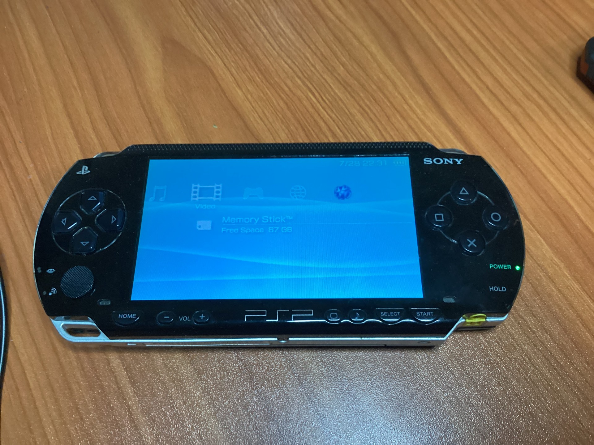
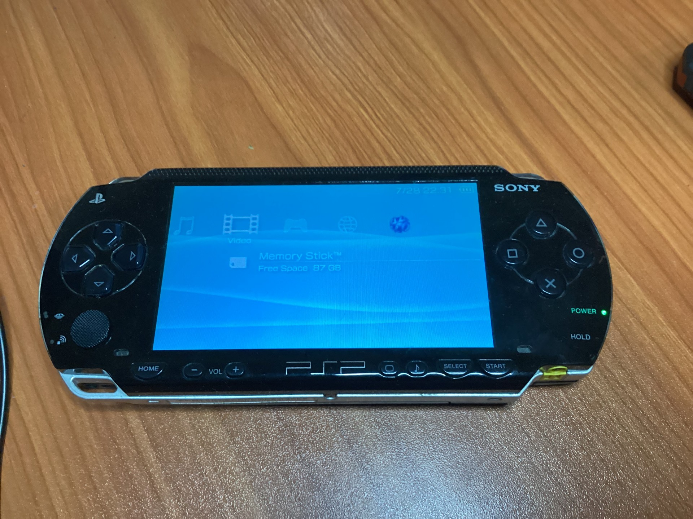
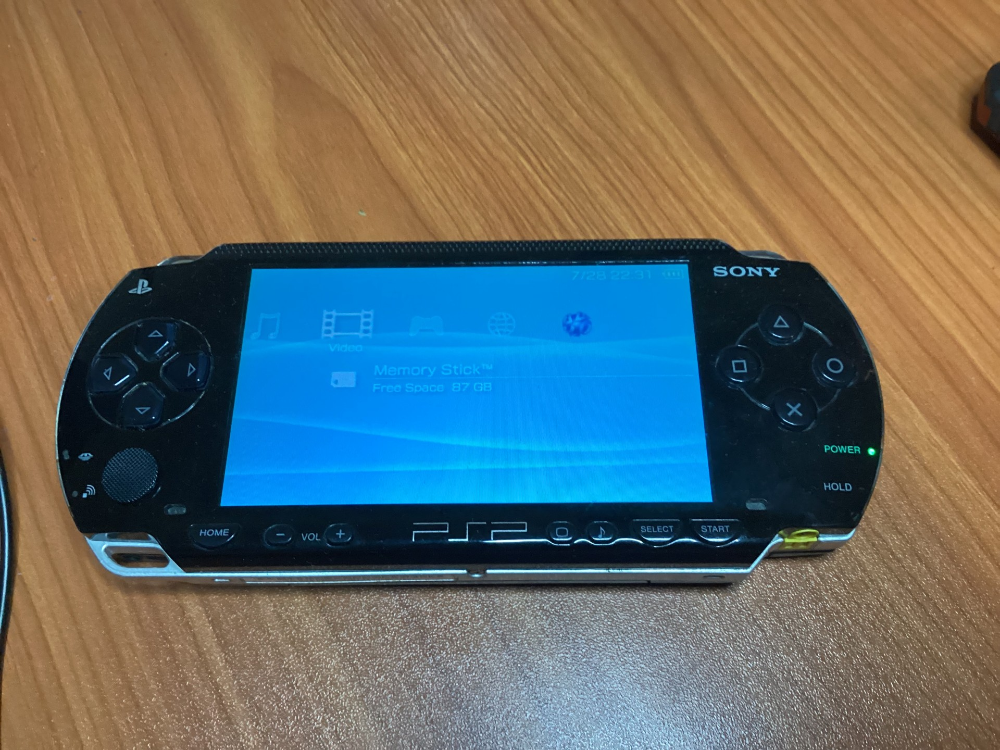
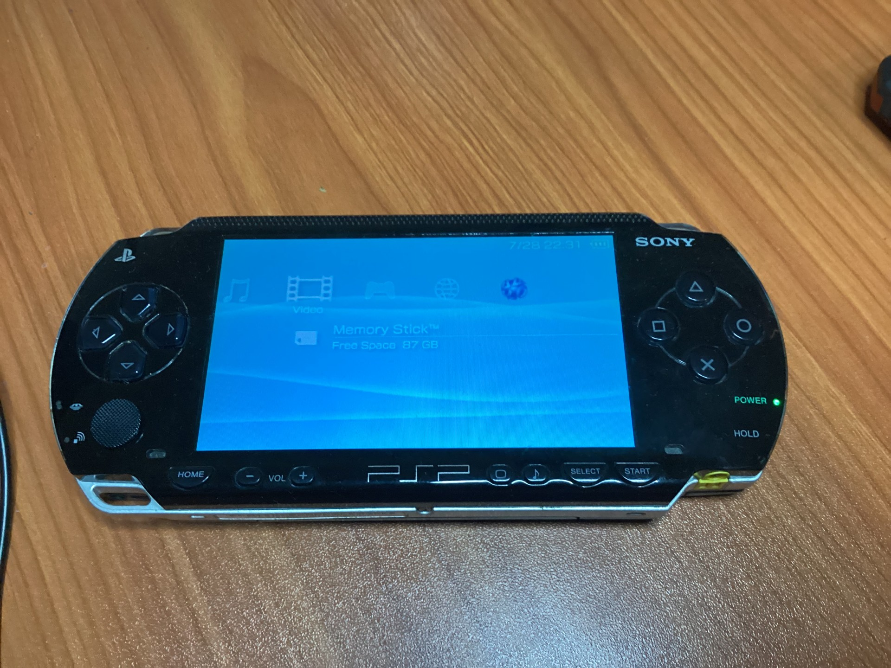

Remember when games were built to last? I do—and I bring them back to life.
I repair classic video game consoles like NES, Sega, Xbox and PlayStation,
combining hands-on skill with a love for retro tech.
My website showcases the results with some complete and some in-progress mods and restorations.
I'm not just fixing hardware — I'm preserving memories.